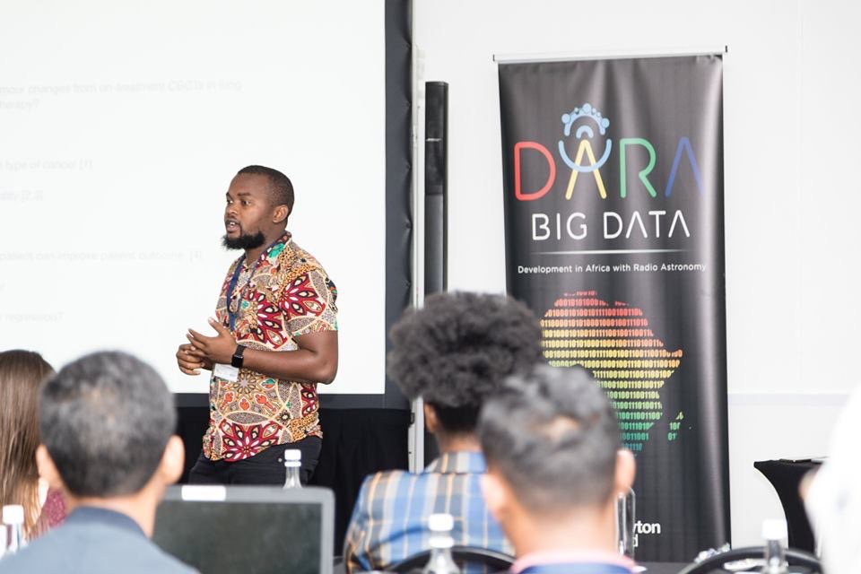
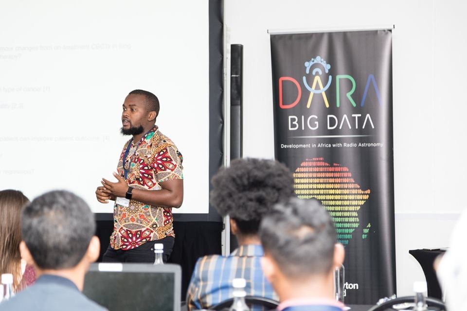
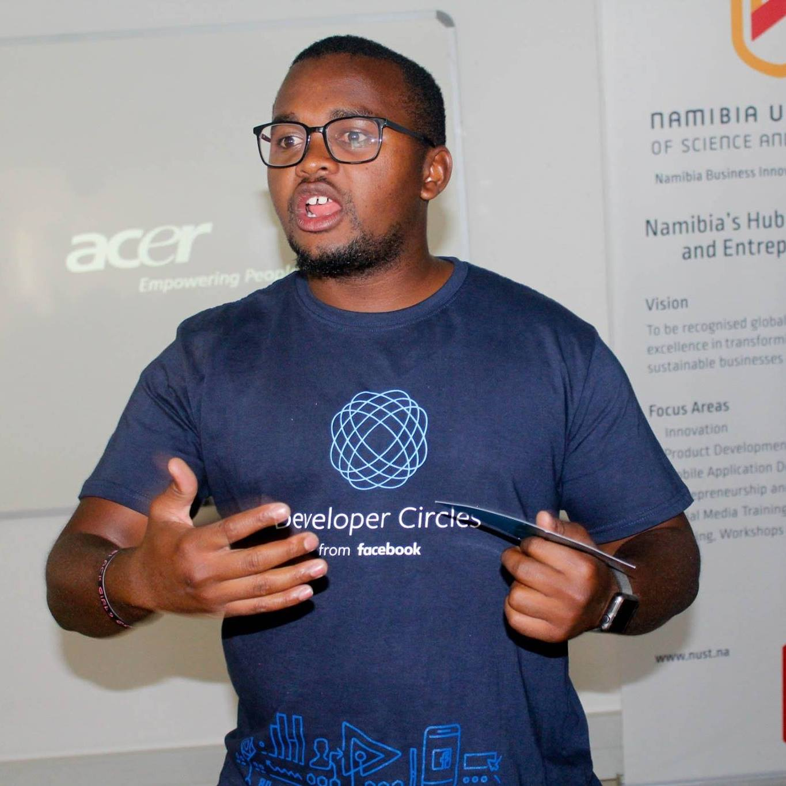
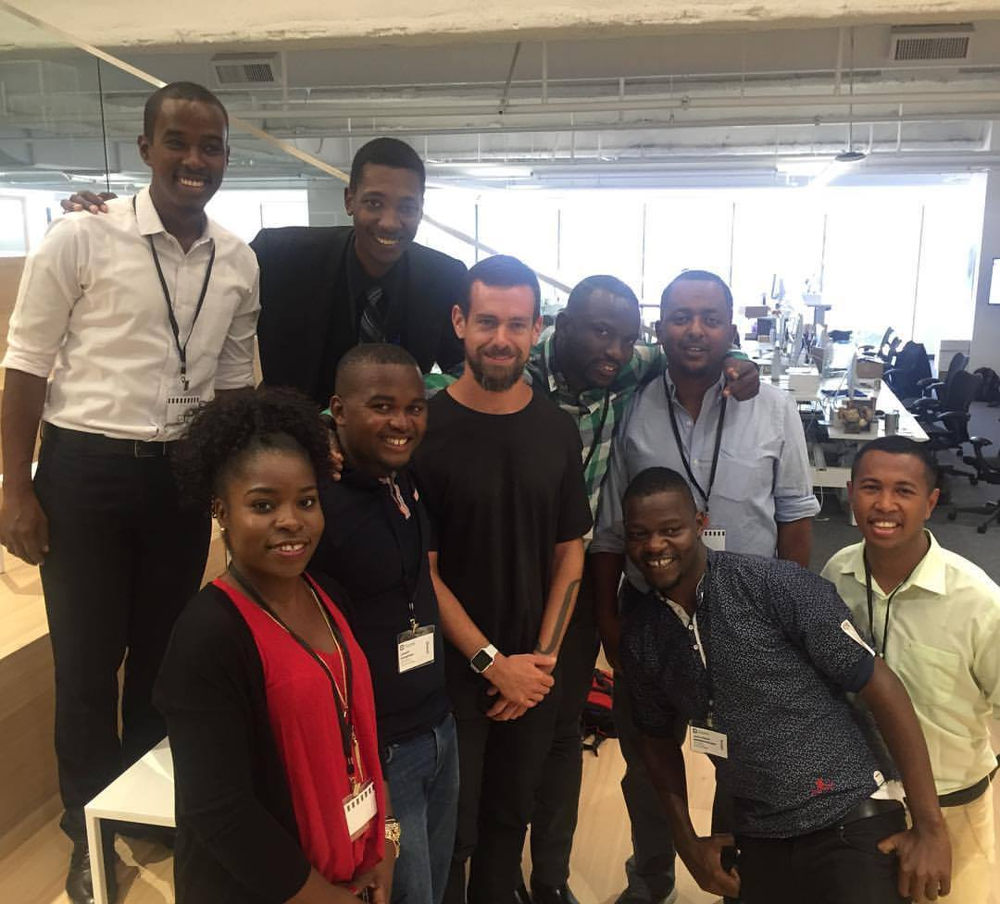
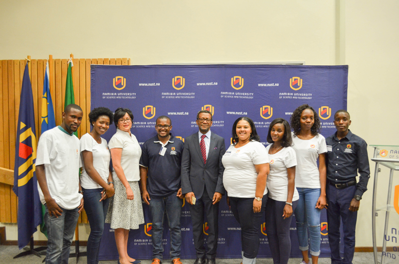

Edhina lyandje ongame (My name is)
Lameck Mbangula Amugongo, PhD
I'm passionate software developer, tech enthusiast and early-career researcher.
 
I have a keen interest in research and its application to solving societal problems.
I am an adamant believer in co-creation as path to facilitate innovation.

I have a keen interest in research and its application to solving societal problems.
I am an adamant believer in co-creation as path to facilitate innovation.

Development in Africa with radio astronomy (DARA) Big Data is a Newton Fund project that aims to fund students from countries that are part of the African very long baseline interferometry network (AVN) to undertake research degrees that build skills in the field of data sciences.

Developer Circles are important as they bring developers, designers, technology enthusiasts and citizens to share ideas, collaborate and learn from each other.

Lameck Amugongo on the Journey to Silicon Valley - It was a dream come true when he was selected to visit Silicon Valley for six weeks as a part of the Mandela Washington Fellowship programme.

The National student research symposium was initiated by a postgraduate student in Computer Science, Lameck Amugongo.
The main aims of the SRS are: to give students an opportunity to present and demonstrate their scientific work;
equip students with technical and scientific writing skills; enhance focus on applied research;
and develop a culture of publishing amongst young researchers.